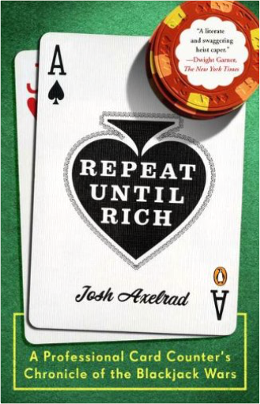
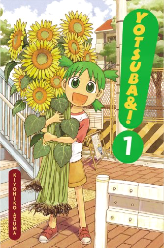
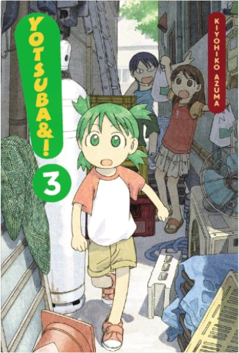
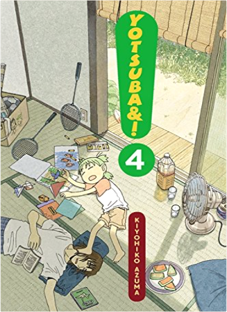
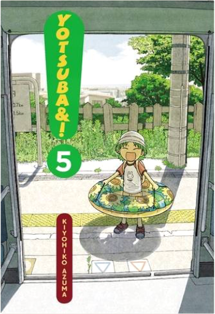
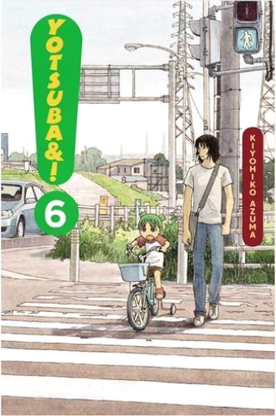

Vampire Cheerleaders Must Die!Adam Arnold  Vampire Cheerleaders meet Paranormal Mystery Squad meet Aoi House! Vampire Cheerleaders/Paranormal Mystery Squad Monster Mash CollectionAdam Arnold "Offers a good story of horror and comedy." —FANGORIA Singing the Journey: A Supplement to Singing the Living TraditionUnitarian Universalist Association This 75-song supplement presents an exceptional variety of music for congregational singing. Singing the Living TraditionUnitarian Universalist Association Unitarian Universalism's hymnbook - hymns, songs and readings from around the world. Pew Edition: 415 hymns and songs and 317 readings. Hardcover.  Face Forward is an inspirational and how-to guide to make-up from one of the most sought after and successful make-up artists working today.  Repeat Until Rich: A Professional Card Counter's Chronicle of the Blackjack WarsJosh Axelrad A deliciously wry, edge-of-your-seat memoir about making a fortune from counting cards. | Azumanga DaiohKiyohiko Azuma The best high school stories are simultaneously funny, warm, and endearing - but most importantly, the characters come alive on the page. Get to know the girls who set a new standard for the high school experience! Sakaki - strong and silent with a soft and fuzzy center  Yotsuba&!, Vol. 1Kiyohiko Azuma Hello! This is Koiwai Yotsuba, Yotsuba Koiwai...um, YOTSUBA! Yotsuba moved with Daddy to a new house from our old house waaaaaaay over there! And moving's fun 'cos people wave! (Ohhhh!!) And Yotsuba met these nice people next door and made friends to play with (one of 'em acted like one of those bad strangers Daddy told Yotsuba not to go with, but it was okay in the end). I hope we get to play a lot. And eat ice cream! And-and-and...oh yeah! You should come play with Yotsuba too! Yotsuba&!, Vol. 2Kiyohiko Azuma Ohhhhh! Yotsuba's back! Today, Yotsuba was drawing Jumbo, okay? That's Daddy's REALLY, REALLY BIG friend. He's real nice and I guess a big baby. But he's too big to draw in Yotsuba's sketchbook! So Yotsuba drew Jumbo on the street in front of our house! Cool, huh? But Ena's friend Miura, who has wheels on her feet, said Yotsuba was bad at drawing...she's wrong, right? RIGHT!?  Yotsuba&!, Vol. 3Kiyohiko Azuma YOTSUBA heeeeeere! Guess what, guess what!? Yotsuba is going to a flower store with Fuuka! Yotsuba's gonna give flowers to everybody in the whole, wide world, even the police lady with her whistle that goes - PI! PI! PIPI! PI! PIPUUUUUUUU!!  Yotsuba&!, Vol. 4Kiyohiko Azuma *sniffle* Yotsuba thinks grown-ups are mean. Daddy plays all kinds of neat games with Yotsuba, but he ALWAYS WINS! Even when Yotsuba TELLS him to be paper in Rock-Paper-Scissors, he doesn't listen! Even then! Yotsuba never, ever wants to be a big meanie grown-up, nuh-uh! But grown-ups get to buy ice cream all by themselves, so...um...maybe it's okay to be a grown-up sometimes?  Yotsuba&!, Vol. 5Kiyohiko Azuma Yotsuba met a robot at Ena's house! Betcha haven't met one ever! It was THIIIIIS big - but not bigger than Jumbo or anything - and it ate money! Yotsuba's never met anyone who ate money before! Maybe it gets more powers with more money!? Yotsuba should try giving it more money next time! Huh...what happens when money-eating robots get full? Do they have to go to the little robots' room? Hmmmm...  Yotsuba&!, Vol. 6Kiyohiko Azuma Yotsuba's getting a biiiiike, Yotsuba's getting a biiiiiike!! Didja know the wheels of a bike go round and round and round and round and round and round and round and round and round and round and round and round and roun - oh, Yotsuba's getting dizzy...whoooooa... |

Github Pages
Collection Total:
291 Éléments
291 Éléments
Last Updated:
Jun 2, 2019
Jun 2, 2019
 Made with Delicious Library
Made with Delicious Library